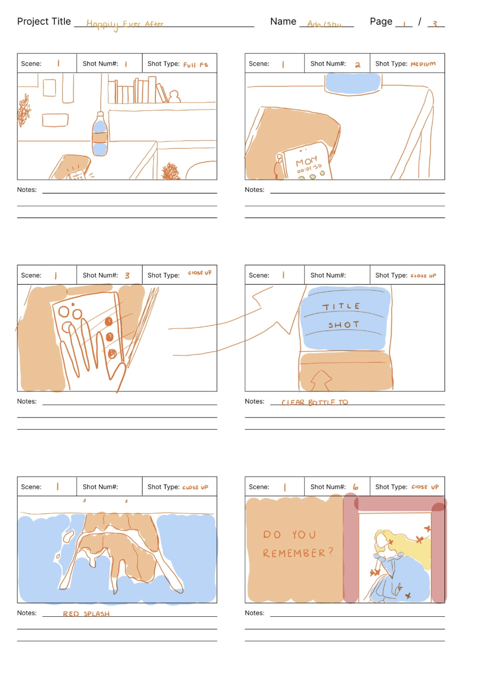
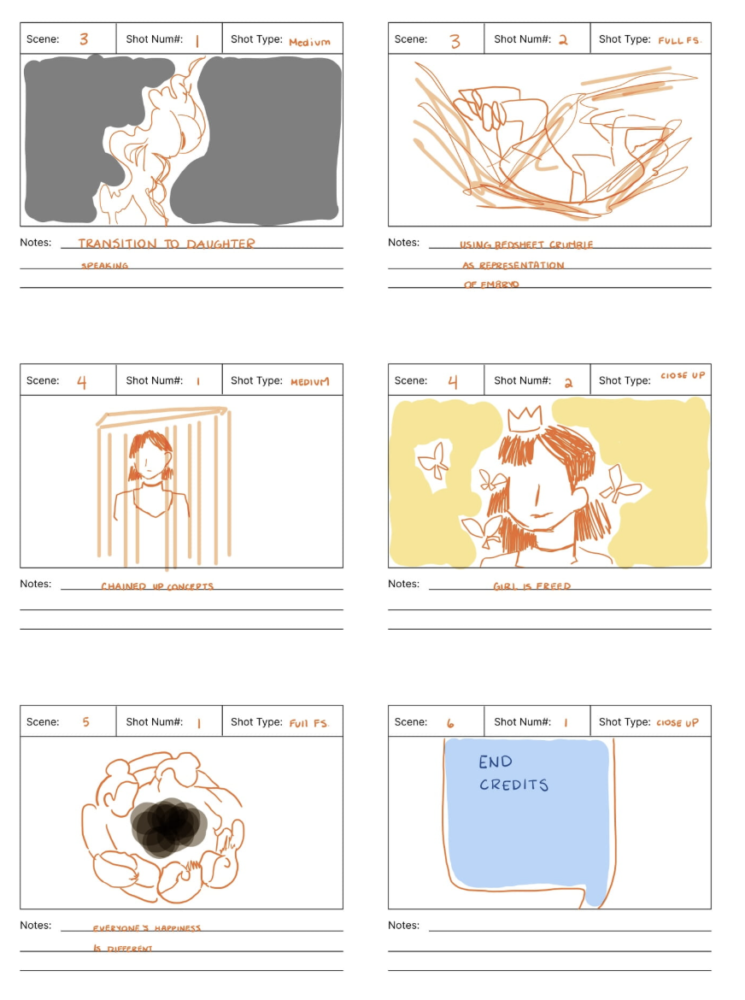

May 8, 2023
In this video project, the story depicts the clash of a traditional way of thinking and a more individual way of thinking. On the first part of the video, there is the mother's voice, and on the latter half of the video, is the daughter's voice. This video stands more on the daughter's side as the scenes are all connected to the daughter's mind and thoughts. The video starts as the mother complains that her daughter will soon to be a “leftover woman,” and connects this to the fact that the daughter will never be happy if she doesn’t marry. In the process the mom compares the daughter and uses hurtful words. In response, the daughter feels downcast, however, she still stand up for her idea that marriage isn't the only way to happiness. The daughter can still be happy by herself.
This project was inspired by the consistency of the topic in school. In GPS, Media in China, Chinese, and on social media, “leftover women” is a common topic. This is further induced by the fact that I come from a more traditional Chinese family, so my grandparents have brought up the fact that later on, I should focus on settling down and getting married after college. In this way, I connect to the daughter's side, as I disagree with the leftover women concept, and I believe that no matter what happens, I can still be happy. I wanted to explore this topic as it relates to many complex topics such as gender, culture, and societal expectations in modern China Below are parts of the storyboard for the project, one for Scene 1 and one for Scene 3.
 The storyboard served as a checklist and connection in the creation process. Because each scene on the storyboard relays a different shot, I needed to make sure I had each of them. In addition, being seeing them all together, it was easier to find the connections between the scenes as I could see how scenes lead to the next scene.
In the first part, we chose a more homely concept as phone calls to family often occur in a more comfortable setting. By using a homely concept, the audience can feel more connected to the scene. The lighting and directing were both rather specific as not focusing on either could cause unintentional issues in the video making process. As seen in one part with the mirror, it was shot under a specific lighting, as the black clothing highlighted the words. This wouldn't be achieved as easily with a white background.
The most challenging part was matching up the words to the scene as I wanted, especially for the Juxtaposition, the specific words to match to the certain scene, such as regarding marriage or having kids. However, oftentimes, the voiceover could be longer than the scene shot or vise versa. This brought to my attention that in order to shoot the exactness I wanted I need to organize each scene in a very timely manner. As a result, I ended up cutting parts of the voices or utilizing copy/reverse on videos to make them fit together.Throughout the editing process, the most interesting skills I learned was using Key Frames and Blending Option. This proved especially helpful to play with text and create cool transitional effects. I also explored different ratios with the frame in order to make the video funner. I used this to connect certain scenes with each other side by side, or make it so that they each scene on the screen represents another perspective on the topic. Another tip I learned was to screen record drawing scenes which allowed me to add a more an animation style in my video.
My role was drawing the storyboard, video editing, and organizing the scenes. I appreciate my partner in helping shoot the frames, organizing the voice recordings, and working alongside me as we put everything together. The exchange of ideas allowed the ideas in the video to be more developed, as I wouldn't have the same ideas alone. I learned how to utilize different ratios in the frame, and other skills we learned together. I was inspired more by the Wang Kar Wai saturated aesthetic, so I explored the adjusting on the filters in order to create that effect. I was also inspired on videos from 小红书 in which creators utilized drawing effects in their videos.